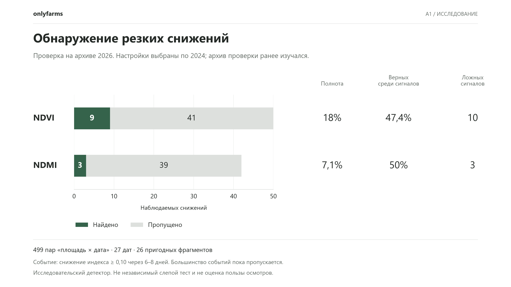
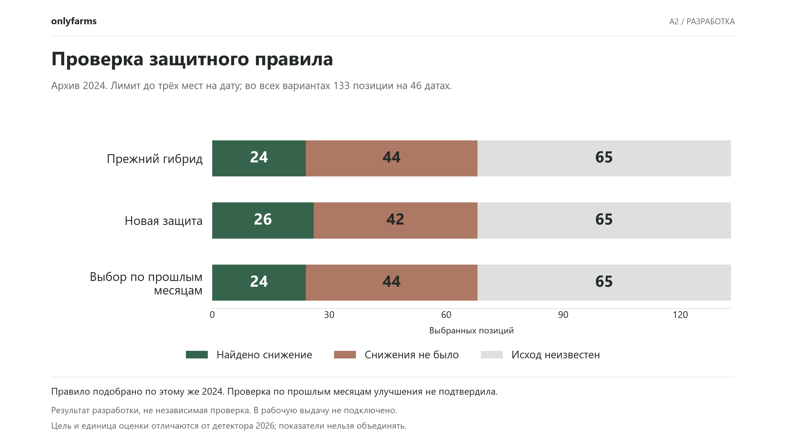

Исследовательская модель
Результаты и ограничения прогнозной части.
Что подтверждают результаты
Модель находит отдельные будущие спектральные снижения. Высокая точность, преимущество при выборе полезных осмотров и экономический эффект пока не доказаны. Интерфейс основного сценария показывает наблюдаемые архивные изменения.


А1. Обнаружение резких снижений
NDVI: 9 находок, 41 пропуск, 10 ложных сигналов. NDMI: 3 находки, 39 пропусков, 3 ложных сигнала. Настройки по 2024, архив 2026 ранее изучался. Это не слепая внешняя проверка. Числа относятся к спектральным событиям, а не подтверждённым проблемам посева.



А2. Разработка рейтинга
При том же лимите 133 мест правило дало на два найденных события больше и на два отрицательных выбора меньше. Настройка использовала тот же 2024. Выбор по прошлым месяцам улучшение не подтвердил. У 65 выбранных мест исход неизвестен. В продукт правило не подключено. Цель отличается от детектора А1.

Данные для вопросов жюри
Показывать эти результаты как статус исследования. 47–50% верных сигналов не являются общей точностью продукта. Новых фактических осмотров и доказанной экономии в комплекте нет.